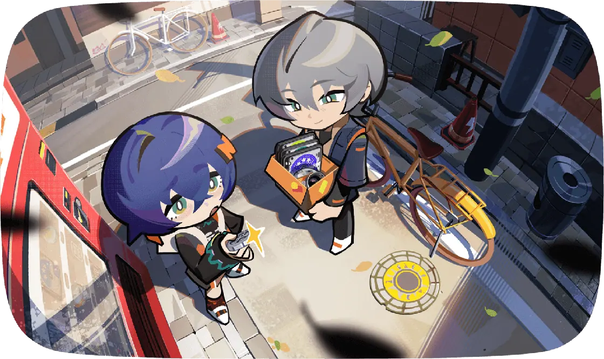
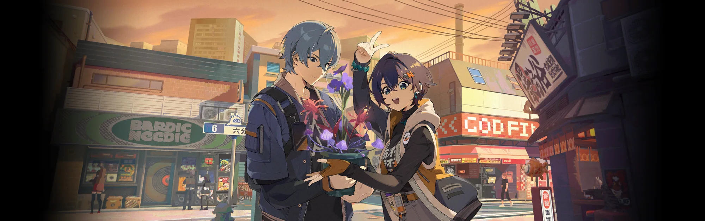
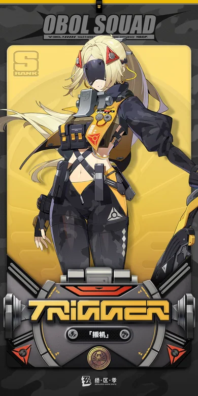

07 / EDITORIAL NOTES
NOTES FROM
THE CITY.
Short visual essays and archive entry points, written as a guide to noticing the details.
FRAMEVERSE CULTURE NETWORK / 2026SCROLL TO EXPLORE ↓

FIELD NOTE 001
A CITY BUILT IN LAYERS
The recognizable rhythm of New Eridu lives in the smallest things: a storefront, a sign, a quiet corner of daylight.
READ THE VISUAL NOTE ↗
FIELD NOTE 002
COLOUR AS A SIGNAL
In the visual language of Zenless Zone Zero, typography, colour and compositional noise keep every surface in motion.
READ THE VISUAL NOTE ↗
FIELD NOTE 003
THE FRAME AS A MEMORY
The CG archive slows down the world for a moment, giving every scene room to breathe.
READ THE VISUAL NOTE ↗
FIELD NOTE 004
THE ART OF THE SILHOUETTE
The visual character files capture personality in graphic form, from expressive poses to sharp typographic systems.
READ THE VISUAL NOTE ↗